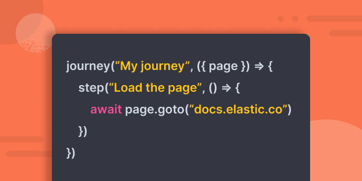

- Observability: other versions:
- What is Elastic Observability?
- What’s new in 8.10
- Get started
- Application performance monitoring (APM)
- Logs
- Infrastructure monitoring
- Synthetic monitoring
- Get started
- Scripting browser monitors
- Configure lightweight monitors
- Manage monitors
- Work with params and secrets
- Analyze monitor data
- Monitor resources on private networks
- Use the CLI
- Configure projects
- Configure Synthetics settings
- Grant users access to secured resources
- Manage data retention
- Use Synthetics with traffic filters
- Migrate from the Elastic Synthetics integration
- Synthetics support matrix
- Synthetics Encryption and Security
- Uptime monitoring
- Real user monitoring
- Universal Profiling (beta)
- Alerting
- Service-level objectives (SLOs) (beta)
- Cases
- CI/CD observability
- Troubleshooting
- Fields reference
- Tutorials
- Monitor Amazon Web Services (AWS) with Elastic Agent
- Monitor Amazon Web Services (AWS) with Beats
- Monitor Google Cloud Platform
- Monitor a Java application
- Monitor Kubernetes
- Monitor Microsoft Azure with Elastic Agent
- Monitor Microsoft Azure with the Azure Native ISV Service
- Monitor Microsoft Azure with Beats
Rely on the most widely deployed observability solution, powered by machine learning and analytics, to converge metrics, logs, and traces that deliver unified visibility and actionable insights.
- Eliminate tool silos and efficiently store data
- Get visibility across hybrid and multi-cloud environments
- Monitor your digital experience — 24/7

What do you want to observe?
Use cases
Cloud monitoring
Cross-platform and multi-cloud visibility and analytics.
- Monitor Amazon Web Services (AWS)
Learn how to monitor AWS logs (VPC Flow and S3 access) and metrics (billing and EC2). - Monitor Microsoft Azure
Learn how to monitor Azure billing metrics and activity logs.
DevOps
Observe your entire software lifecycle — from development to production.
- CI/CD
Get better visibility into your CI/CD pipelines. - ECS logging
Leverage the Elastic Common Schema logging libraries to automatically link application traces to their corresponding logs.
AIOps
Automate anomaly detection and accelerate root cause analysis.
- Root cause analysis with logs
Learn about Elastic’s artificial intelligence for IT operations and machine learning capabilities for root cause analysis. - APM Correlations
Automatically identify the probable causes of slow or failed transactions.
User experience
Measure, gauge, and improve your end users’ experience.
- Scripting browser monitors
Simulate critical user workflows on a regular interval to catch bugs before your users report them. - User experience
Learn how to track Core Web Vitals and how to use them to quantify the real-world user experience.


